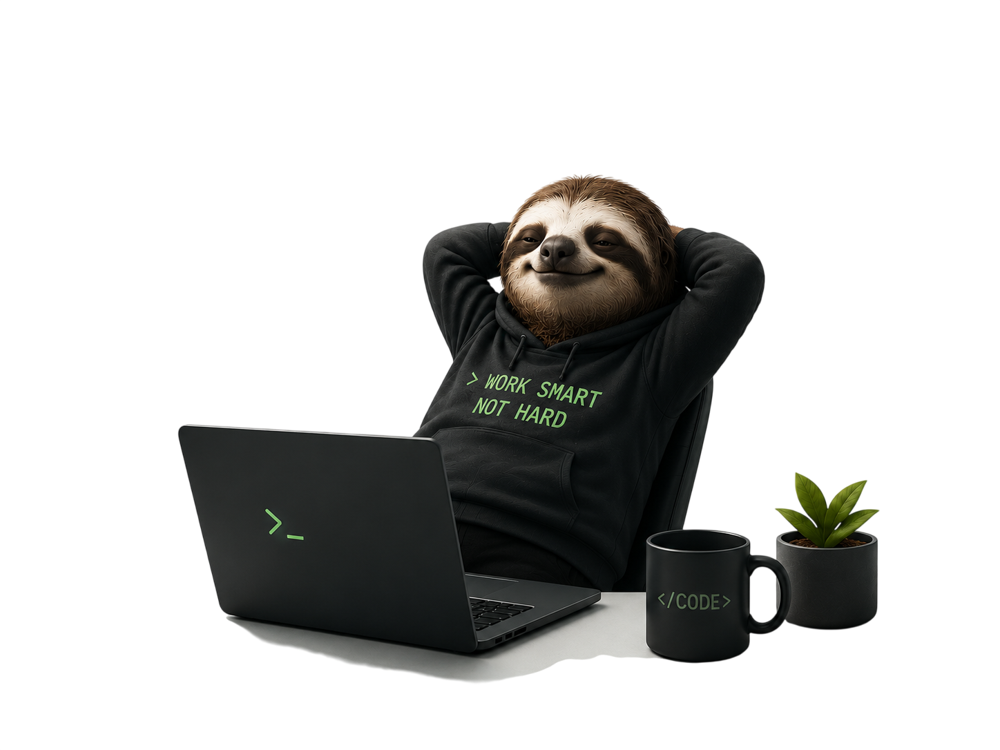

Если задачу приходится делать каждый день — скорее всего, её можно автоматизировать

Сайт, бот или автоматизация - в зависимости от того, что сейчас важнее для вашего бизнеса.
Сайт, чтобы клиенты находили вас и доверяли с первого взгляда.
Отвечают на вопросы клиентов, собирают заявки, ищут ответы в базе знаний компании. Работают 24/7 - экономят до 80% времени команды.
Соединяю сервисы между собой, чтобы рутинные действия - уведомления, сбор данных, отчёты - происходили сами.
Не уверены, что можно автоматизировать? Проведу аудит, найду узкие места и составлю roadmap внедрения AI.
Автоматизация должна приносить измеримую пользу, а не просто выглядеть современно.
Поэтому каждый проект начинается с анализа процессов. Я ищу задачи, которые ежедневно отнимают время сотрудников, приводят к ошибкам или тормозят работу компании.
После этого разрабатываю решение: интеграции между сервисами, AI-ассистенты, Telegram-боты, автоматическую обработку документов, CRM и другие процессы.
Результат - меньше ручной работы, меньше ошибок и больше времени на развитие бизнеса.
Работа над каждым проектом строится по понятному и прозрачному процессу.
Обсуждение задачи, цели и сроков
Утверждение конкретных, проверяемых критериев
Создание сайта, бота или интеграции. Показ прогресса по ходу работы при необходимости.
Проверка по сценариям из требований
Передача готового решения с последующей поддержкой при необходимости
Разверните карточку, чтобы увидеть цель, проблему, решение и результат.
Уведомления о заявках без захода в Яндекс Формы
Удобный сбор заявок на мероприятие через анкету, с быстрым уведомлением организатора о новых ответах.
Интеграция форм с базой данных и Telegram-ботом: при заполнении анкеты организатору приходит сообщение с данными участника.
Яндекс Формы не интегрированы с таблицами - заявки видны только внутри сервиса, без уведомлений о новых ответах.
Заявки обрабатываются мгновенно, все данные - в одном месте, общение с участником начинается сразу в Telegram.
Ответы на вопросы по процессам компании одним запросом
Дать сотрудникам быстрый доступ к базе знаний по процессам компании без ручного поиска по ссылкам.
Бот-помощник, который ищет ответ в базе знаний по свободному вопросу и выдаёт его напрямую в чате.
Ссылки на документы устаревают, сотрудники не помнят точных названий страниц - поиск ответа затягивается.
Ответы приходят за секунды, нагрузка на коллег и HR снизилась, онбординг новичков стал проще.
Лендинг, которому доверяют с первого экрана
Сайт для практикующего врача, который вызывает доверие ещё до первого визита и явно показывает запись на приём.
Одностраничный сайт с акцентом на квалификацию врача, понятной структурой услуг и кликабельным номером телефона для мгновенного звонка.
Не было сайта вообще - пациенты находили врача только по сарафанному радио, без возможности заранее узнать о специализации и опыте.
Пациенты сразу видят квалификацию и могут записаться в одно касание, доверие формируется ещё до звонка.